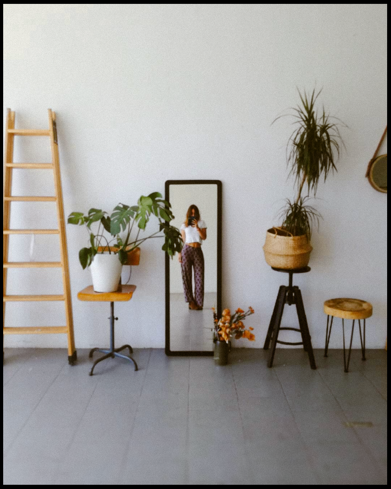

¡Hola!
Siempre me ha atraído la imagen y he buscado mil formas de plasmar y de acercarme a esta atracción. Me inspiro en lo que me rodea: en la naturaleza, en la gente, en los libros... e intento crear mi lenguaje a partir de todo esto, ya sea a través de la fotografía, del diseño, o de la pintura. He colaborado en proyectos de moda y de diseño gráfico a nivel profesional, aunque sobretodo creo imágenes para mi misma.
Para más información o preguntas escríbeme a:
inesuribeb@gmail.com